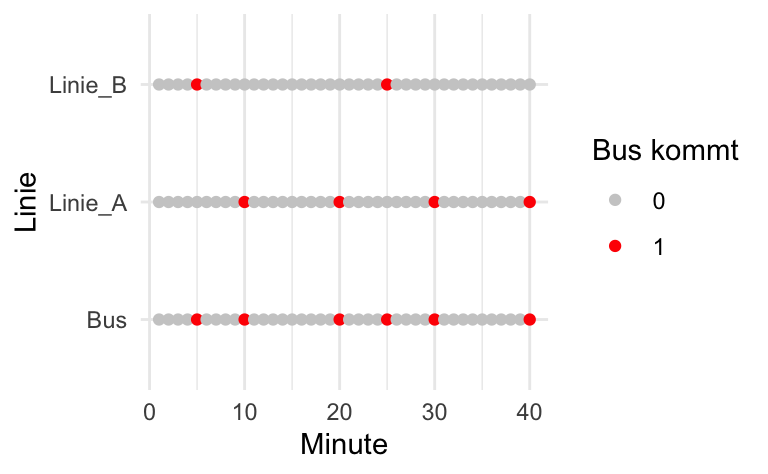

| Minute | Linie_A | Linie_B | Bus |
|---|---|---|---|
| 1 | 0 | 0 | 0 |
| 2 | 0 | 0 | 0 |
| 3 | 0 | 0 | 0 |
| 4 | 0 | 0 | 0 |
| 5 | 0 | 1 | 1 |
| 6 | 0 | 0 | 0 |
| 7 | 0 | 0 | 0 |
| 8 | 0 | 0 | 0 |
| 9 | 0 | 0 | 0 |
| 10 | 1 | 0 | 1 |
| 11 | 0 | 0 | 0 |
| 12 | 0 | 0 | 0 |
| 13 | 0 | 0 | 0 |
| 14 | 0 | 0 | 0 |
| 15 | 0 | 0 | 0 |
| 16 | 0 | 0 | 0 |
| 17 | 0 | 0 | 0 |
| 18 | 0 | 0 | 0 |
| 19 | 0 | 0 | 0 |
| 20 | 1 | 0 | 1 |
Bus1
probability
bayes
num
Aufgabe
Die folgende Aufgabe basiert auf S. 110 von Bourier, G. (2018). Wahrscheinlichkeitsrechnung und schließende Statistik: Praxisorientierte Einführung — Mit Aufgaben und Lösungen. Springer Fachmedien. https://doi.org/10.1007/978-3-658-07481-4
An einer Bushaltestelle verkehren zwei Linien. Linie A hält im 10-Minuten-Takt, Linie B im 20-Minuten-Takt, der um fünf Minuten zeitversetzt ist zu Linie A.
Aufgabe: Wie groß ist die Wahrscheinlichkeit, dass eine Person, die zu einem zufälligen Zeitpunkt an der Haltestelle ankommt, zwischen 3 und 6 Minuten warten muss? Simulieren Sie die Wahrscheinlichkeitsverteilung anhand von Stichprobenziehungen! Geben Sie die Wahrscheinlichkeit an.
Hinweise:
- Beide Linien sind stets pünktlich.
- Es treten keine sonstigen Störungen auf.
- Ziehen Sie 1e04 Stichproben.
- Runden Sie auf zwei Dezimalstellen.
Lösung
Vergegenwärtigen wir uns die Ereignisse (“Bus A kommt” und “Bus B kommt”) in den ersten 20 Minuten - danach wiederholt es sich.
Ergänzen wir noch das Ereignis “Bus A oder Bus B kommt”:
Der vertikale Balken | ist in R der Operator für das logische Oder.
Spaßeshalber ergänzen wir noch die nächsten 20 Minuten:
d2 <-
d %>%
mutate(Minute = 21:40)
d3 <-
d %>%
bind_rows(d2)Das plotten wir mal.
Zum Plotten macht es Sinn, den Datensatz lang zu pivotieren:
d3_long <-
d3 %>%
pivot_longer(cols = Linie_A:Bus, names_to = "Linie", values_to = "Bus_kommt")
head(d3_long)# A tibble: 6 × 3
Minute Linie Bus_kommt
<int> <chr> <int>
1 1 Linie_A 0
2 1 Linie_B 0
3 1 Bus 0
4 2 Linie_A 0
5 2 Linie_B 0
6 2 Bus 0
Jetzt fügen wir die Wartezeiten hinzu. Dazu ein Beispiel: Kommt man in Minute 1 oder in Minute 6 an, so muss man 4 Minuten warten auf Linie A. Kommt man in Minute 2 oder 7 an, so muss man 3 Minuten warten auf Linie A, etc. Kommt man in der 5. Minute, so ist der Bus gerade weg (man könnte auch vereinbaren, dass der Bus noch da ist; beides ist okay). Für Linie B gilt Ähnliches.
Um das auszurechnen, braucht man den “Rest-Operator” in R, %%:
[1] 0[1] 1[1] 2Die Gesamt-Wartezeit ist die kleinere der beiden Wartezeiten (Warten auf Linie A bzw. auf Linie B):
Jetzt ziehen wir Stichproben, damit wir zählen können, wie häufig der Bus kommt bei einer bestimmten Ankunftszeit einer Person an der Haltestelle.
stipros <-
d %>%
slice_sample(n = 1e4, replace = TRUE)
head(stipros)# A tibble: 6 × 4
Minute Linie_A Linie_B Bus
<int> <int> <int> <int>
1 13 0 0 0
2 7 0 0 0
3 15 0 0 0
4 4 0 0 0
5 19 0 0 0
6 15 0 0 0Schauen wir uns mal die Stichproben als Histogramm an:
stipros %>%
count(Minute, Bus)# A tibble: 20 × 3
Minute Bus n
<int> <int> <int>
1 1 0 543
2 2 0 503
3 3 0 469
4 4 0 491
5 5 1 486
6 6 0 533
7 7 0 460
8 8 0 525
9 9 0 516
10 10 1 510
11 11 0 479
12 12 0 463
13 13 0 504
14 14 0 523
15 15 0 503
16 16 0 539
17 17 0 476
18 18 0 499
19 19 0 484
20 20 1 494Categories:
- probability
- bayes
- num